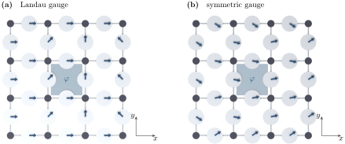

Advanced Quantum Materials 2027 · All lectures · Lecture notes
Session 4. Electrons in a Magnetic Field, Quantum Hall Effect and Landau Levels
4.8 The Landau gauge and the symmetric gauge
For a uniform field \(\mathbf{B} = B\hat{z}\), there are two gauges that will be important for us.
The Landau gauge, \(\mathbf{A} = (0, Bx, 0)\), puts all the spatial dependence into one coordinate, \(x\). Since \(\mathbf{A}\) does not depend on \(y\), the Hamiltonian built from it still commutes with \(p_y\), so translations along \(y\) are still a good symmetry, but it does not commute with \(p_x\). This gauge keeps one translational symmetry, which is what we need to have a band structure at all, and it is the gauge that we use in every ribbon calculation in this session.
The symmetric gauge, \(\mathbf{A} = \tfrac{B}{2}(-y, x, 0)\), breaks both translational symmetries but keeps the rotational symmetry of the system instead. It is the natural gauge to write many-body wavefunctions with a good angular momentum, which is what we need when we arrive at the fractional quantum Hall state, from Section 4.13 on.
Figure 4.2 shows the difference in a concrete way, by writing both gauges as Peierls phases (4.4) on a square lattice. The phases of the single bonds are completely different in the two gauges, but the sum around any plaquette is the same flux in both. This sum is the only gauge-invariant combination, and it is the only thing that the electrons respond to.
